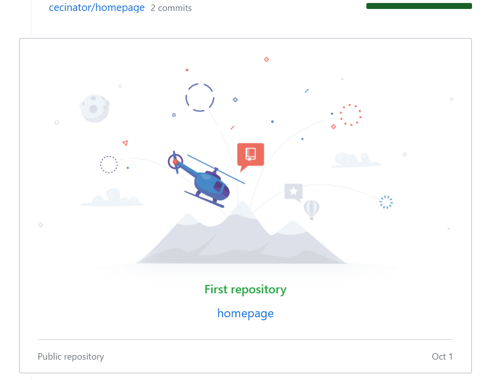

Forside/Git og GitHub
Git og GitHub
Git er et distrubuert verssjonskontrollsystem, som er teknologien
bak en nettbasert lagringsdeling for utvikling av HTML/CSS prosjekter.
GitHub er serverhosingen, og er altså den webbaserte reposotoryen bak det hele.
Git og GitHub brukes for store prosjekter for å kunne samarbeide bedre om filiene
og se enringene som er gjort underveis. Her kan man altså se hele historikken til filene,
hvem som har gjort hvilke endringer og når dem er gjort.
Fordelene ved å bruke dette programmet sier vel litt seg selv ved det jeg nevnte over,
men i tillegg til det kan det også brukes som en slags backup for filene.
Evnen til å kunne samarbeide og ikke ødelegge hverandres endringer i samme prosjekt
er vesentlig i store prosjektet og dette vil gjøre hele samarbeidet
mye enklere, oversikling og i beste fall konflinktløs.
Selv er jeg veldig ny til bare HTML5, CSS, struktur i mappene og IT generelt
derfor kommer min erfaring med GitHub til å både være ganske krokete,
litt langdryg og forhåpentligvis suksessfull. Jeg har i alle fall begynt.
